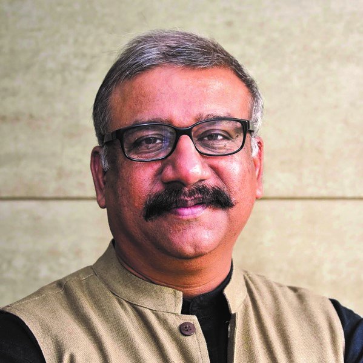

"I must congratulate NASA for doing something I did not believe was possible - of doing fieldwork, documentation and actually creating things hand-on. I can see that there are interesting developments afoot and a lot of young people are trying to make a difference and bring about a change in the world of architecture"
-AR. SANJAY PRAKASH
(SHiFt, Studio for Habitat Future)
"NASA is no doubt one of the largest Architects student bodies in the world. The fact the body has survived for six decades is itself the evidence of leadership and the student hope for the future. In any society change is brought by young people, and in India change in architectural education, I hope, will be brought out by the young minds of the Nation Association of Students of Architecture. With the growing number of schools in the country, Nasa has become a potential force in future, and this will bring a big change in Architectural education and profession in India. I believe that the IIA should have a student representative in their committees and bodies…. It is no longer a student Jambori and, it has become a student platform where the young minds meet not only to have fun but also exchange a lot of new ideas. This is important for the development of the future of the country and for nurturing young minds."
-AR. JAFFER KHAN
(Principal, Jaff Design Studio, Auckland, New Zealand)

"NASA is very beneficial for all those who make it a point to attend and also be a part of the preparation at their respective colleges whether it is zonal NASA or annual NASA, the entire energy level is completely different from what happens on the routine bases in the colleges. When we go to participate in NASA activities it is an opportunity to compare your work with other colleges at the same level which creates a sort of peer competition. There are a lot of conversations and exchanges of ideas, that you come back with a changed perspective and as a completely changed person."
- AR. MADHAV JOSHI
( Madhav Joshi and Associates, Pune )
"NASA used to be a small affair during my time in 1975 but now, it is an evolved system with thousands of participants, speakers, and events; it has grown exponentially. It is quite a unique experience; I cannot recollect any other student organization to have grown with such huge numbers of members; the kind of events the organization hosts is unique by itself; that said, one of the most important aspects NASA does is connecting students, this was the primary reason for its establishment and through years, the goal has been growing tremendously"
- Prof. Manoj Mathur
(School of Planning and Architecture, Delhi)
"NASA for me is a parallel education system. That is the greatest strength of Nasa. I can say that as much the student can get from the college, that much itself can be given by Nasa alone. I would definitely like to encourage more and more students to participate in NASA, because it's a completely different world. Students can gain a huge amount of knowledge by participating in Nasa and working with the group for the preparation for NASA."
- AR. NIRMAL KULKARI
(Aum Architects)
 BEING THE VOICE
BEING THE VOICE
 BRIDGING THE GAP
BRIDGING THE GAP
 SUSTAINING
SUSTAINING
 GROWING
GROWING